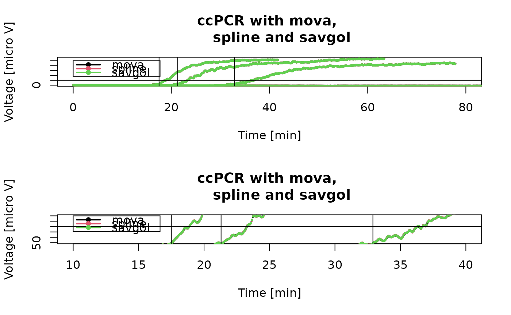
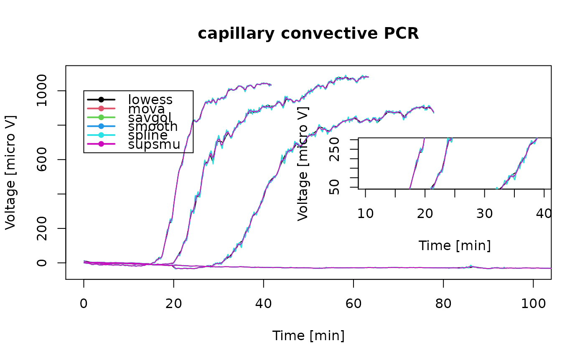

capillaryPCR.RdThe capillary convective PCR (ccPCR) is a modified device of the ccPCR system proposed by Chou et al. 2011.
data(capillaryPCR)
A data frame with 1844 observations on the following 10 variables.
t.121205Elapsed time during amplification
ED.121205a numeric vector
t.121128Elapsed time during amplification
ED.121128a numeric vector
t.121130.1Elapsed time during amplification
ED.121130.1a numeric vector
t.121130.2Elapsed time during amplification
ED.121130.2a numeric vector
t.121130.3Elapsed time during amplification
ED.121130.3a numeric vector
Modified version of the capillary convective tube isothermal heater heater by Chou et al. 2011. As heating system a conventional block heat was used. On the top of the heating block, we placed for the uptake of the capillaries an aluminum block (8 mm height) in which four holes (3.2 mm diameter and 3.0 mm depth with round shaped bottom) were drilled. The capillaries are regular 100 micro L Roche LightCycler(R). These glass capillaries have a round shaped closed bottom (2.3 mm inner diameter and 3.2 mm outer diameter). An "ESE-Log" detector (QIAGEN Lake Constance) was used for the real time fluorescent measurements, which was mounted in a distance of 5-10 mm next to the capillary. The PCR was performed with SYBR(R) Green fluorescent intercalating dye. Thereof the ESE-Log has in one channel the excitation at 470 nm and the detection at 520 nm. The data was recorded by the FL Digital Software (QIAGEN Lake Constance) and the exported text based raw data.
Ralf Himmelreich, IMM, Mainz, Germany
Chou, W., Chen, P., Miao Jr, M., Kuo, L., Yeh, S. and Chen, P. (2011). Rapid DNA amplification in a capillary tube by natural convection with a single isothermal heater. Biotech. 50, 52-57.
# First example data(capillaryPCR) plot(NA, NA, xlim = c(0,80), ylim = c(0,1300), xlab = "Time [min]", ylab = "Voltage [micro V]", main = "ccPCR - Raw Data")# Second example par(mfrow = c(2,1)) type <- c("mova", "spline", "savgol") plot(NA, NA, xlim = c(0,80), ylim = c(0,1100), xlab = "Time [min]", ylab = "Voltage [micro V]", main = "ccPCR with mova, spline and savgol") for (i in 1:3) { for (j in c(1,3,5,7)) { tmp <- data.frame(na.omit(capillaryPCR[, j]), na.omit(capillaryPCR[, j+1])) tmp.sm <- smoother(tmp[, 1], tmp[, 2], method = list(type[i])) lines(data.frame(tmp[, 1], tmp.sm), type = "b", pch = 20, cex = 0.5, col = i) } }#> Warning: x is not uniform/equidistant (different inter cycle or time intervals. #> This may cause artifacts during the pre-processing.#> Warning: x is not uniform/equidistant (different inter cycle or time intervals. #> This may cause artifacts during the pre-processing.#> Warning: x is not uniform/equidistant (different inter cycle or time intervals. #> This may cause artifacts during the pre-processing.#> Warning: x is not uniform/equidistant (different inter cycle or time intervals. #> This may cause artifacts during the pre-processing.#> Warning: x is not uniform/equidistant (different inter cycle or time intervals. #> This may cause artifacts during the pre-processing.#> Warning: x is not uniform/equidistant (different inter cycle or time intervals. #> This may cause artifacts during the pre-processing.#> Warning: x is not uniform/equidistant (different inter cycle or time intervals. #> This may cause artifacts during the pre-processing.#> Warning: x is not uniform/equidistant (different inter cycle or time intervals. #> This may cause artifacts during the pre-processing.#> Warning: x is not uniform/equidistant (different inter cycle or time intervals. #> This may cause artifacts during the pre-processing.#> Warning: x is not uniform/equidistant (different inter cycle or time intervals. #> This may cause artifacts during the pre-processing.#> Warning: x is not uniform/equidistant (different inter cycle or time intervals. #> This may cause artifacts during the pre-processing.#> Warning: x is not uniform/equidistant (different inter cycle or time intervals. #> This may cause artifacts during the pre-processing.#> Warning: x is not uniform/equidistant (different inter cycle or time intervals. #> This may cause artifacts during the pre-processing.#> Warning: x is not uniform/equidistant (different inter cycle or time intervals. #> This may cause artifacts during the pre-processing.#> Warning: x is not uniform/equidistant (different inter cycle or time intervals. #> This may cause artifacts during the pre-processing.#> Warning: x is not uniform/equidistant (different inter cycle or time intervals. #> This may cause artifacts during the pre-processing.#> Warning: x is not uniform/equidistant (different inter cycle or time intervals. #> This may cause artifacts during the pre-processing.#> Warning: x is not uniform/equidistant (different inter cycle or time intervals. #> This may cause artifacts during the pre-processing.#> Warning: x is not uniform/equidistant (different inter cycle or time intervals. #> This may cause artifacts during the pre-processing.#> Warning: x is not uniform/equidistant (different inter cycle or time intervals. #> This may cause artifacts during the pre-processing.#> Warning: x is not uniform/equidistant (different inter cycle or time intervals. #> This may cause artifacts during the pre-processing.#> Warning: x is not uniform/equidistant (different inter cycle or time intervals. #> This may cause artifacts during the pre-processing.#> Warning: x is not uniform/equidistant (different inter cycle or time intervals. #> This may cause artifacts during the pre-processing.#> Warning: x is not uniform/equidistant (different inter cycle or time intervals. #> This may cause artifacts during the pre-processing.abline(h = 200, v = c(17.5, 21.3, 32.9)) legend(0, 1000, c("mova", "spline", "savgol"), pch = 20, lwd = 2, col = c(1:3)) plot(NA, NA, xlim = c(10,40), ylim = c(50,300), xlab = "Time [min]", ylab = "Voltage [micro V]", main = "ccPCR with mova, spline and savgol")for (i in 1:3) { for (j in c(1,3,5,7)) { tmp <- data.frame(na.omit(capillaryPCR[, j]), na.omit(capillaryPCR[, j+1])) tmp.sm <- smoother(tmp[, 1], tmp[, 2], method = list(type[i])) lines(data.frame(tmp[, 1], tmp.sm), type = "b", pch = 20, cex = 0.5, col = i) } }#> Warning: x is not uniform/equidistant (different inter cycle or time intervals. #> This may cause artifacts during the pre-processing.#> Warning: x is not uniform/equidistant (different inter cycle or time intervals. #> This may cause artifacts during the pre-processing.#> Warning: x is not uniform/equidistant (different inter cycle or time intervals. #> This may cause artifacts during the pre-processing.#> Warning: x is not uniform/equidistant (different inter cycle or time intervals. #> This may cause artifacts during the pre-processing.#> Warning: x is not uniform/equidistant (different inter cycle or time intervals. #> This may cause artifacts during the pre-processing.#> Warning: x is not uniform/equidistant (different inter cycle or time intervals. #> This may cause artifacts during the pre-processing.#> Warning: x is not uniform/equidistant (different inter cycle or time intervals. #> This may cause artifacts during the pre-processing.#> Warning: x is not uniform/equidistant (different inter cycle or time intervals. #> This may cause artifacts during the pre-processing.#> Warning: x is not uniform/equidistant (different inter cycle or time intervals. #> This may cause artifacts during the pre-processing.#> Warning: x is not uniform/equidistant (different inter cycle or time intervals. #> This may cause artifacts during the pre-processing.#> Warning: x is not uniform/equidistant (different inter cycle or time intervals. #> This may cause artifacts during the pre-processing.#> Warning: x is not uniform/equidistant (different inter cycle or time intervals. #> This may cause artifacts during the pre-processing.#> Warning: x is not uniform/equidistant (different inter cycle or time intervals. #> This may cause artifacts during the pre-processing.#> Warning: x is not uniform/equidistant (different inter cycle or time intervals. #> This may cause artifacts during the pre-processing.#> Warning: x is not uniform/equidistant (different inter cycle or time intervals. #> This may cause artifacts during the pre-processing.#> Warning: x is not uniform/equidistant (different inter cycle or time intervals. #> This may cause artifacts during the pre-processing.#> Warning: x is not uniform/equidistant (different inter cycle or time intervals. #> This may cause artifacts during the pre-processing.#> Warning: x is not uniform/equidistant (different inter cycle or time intervals. #> This may cause artifacts during the pre-processing.#> Warning: x is not uniform/equidistant (different inter cycle or time intervals. #> This may cause artifacts during the pre-processing.#> Warning: x is not uniform/equidistant (different inter cycle or time intervals. #> This may cause artifacts during the pre-processing.#> Warning: x is not uniform/equidistant (different inter cycle or time intervals. #> This may cause artifacts during the pre-processing.#> Warning: x is not uniform/equidistant (different inter cycle or time intervals. #> This may cause artifacts during the pre-processing.#> Warning: x is not uniform/equidistant (different inter cycle or time intervals. #> This may cause artifacts during the pre-processing.#> Warning: x is not uniform/equidistant (different inter cycle or time intervals. #> This may cause artifacts during the pre-processing.par(mfrow = c(1,1)) # Third example method <- c("lowess","mova","savgol","smooth","spline", "supsmu") plot(NA, NA, xlim = c(0,100), ylim = c(-50,1100), xlab = "Time [min]", ylab = "Voltage [micro V]", main = "capillary convective PCR")for (i in 1:length(method)) { for (j in c(1,3,5,7)) { tmp <- data.frame(na.omit(capillaryPCR[, j]), na.omit(capillaryPCR[, j+1])) tmp.sm <- smoother(tmp[, 1], tmp[, 2], method = list(method[i])) lines(data.frame(tmp[, 1], tmp.sm), type = "l", pch = 20, cex = 0.5, col = i) } }#> Warning: x is not uniform/equidistant (different inter cycle or time intervals. #> This may cause artifacts during the pre-processing.#> Warning: x is not uniform/equidistant (different inter cycle or time intervals. #> This may cause artifacts during the pre-processing.#> Warning: x is not uniform/equidistant (different inter cycle or time intervals. #> This may cause artifacts during the pre-processing.#> Warning: x is not uniform/equidistant (different inter cycle or time intervals. #> This may cause artifacts during the pre-processing.#> Warning: x is not uniform/equidistant (different inter cycle or time intervals. #> This may cause artifacts during the pre-processing.#> Warning: x is not uniform/equidistant (different inter cycle or time intervals. #> This may cause artifacts during the pre-processing.#> Warning: x is not uniform/equidistant (different inter cycle or time intervals. #> This may cause artifacts during the pre-processing.#> Warning: x is not uniform/equidistant (different inter cycle or time intervals. #> This may cause artifacts during the pre-processing.#> Warning: x is not uniform/equidistant (different inter cycle or time intervals. #> This may cause artifacts during the pre-processing.#> Warning: x is not uniform/equidistant (different inter cycle or time intervals. #> This may cause artifacts during the pre-processing.#> Warning: x is not uniform/equidistant (different inter cycle or time intervals. #> This may cause artifacts during the pre-processing.#> Warning: x is not uniform/equidistant (different inter cycle or time intervals. #> This may cause artifacts during the pre-processing.#> Warning: x is not uniform/equidistant (different inter cycle or time intervals. #> This may cause artifacts during the pre-processing.#> Warning: x is not uniform/equidistant (different inter cycle or time intervals. #> This may cause artifacts during the pre-processing.#> Warning: x is not uniform/equidistant (different inter cycle or time intervals. #> This may cause artifacts during the pre-processing.#> Warning: x is not uniform/equidistant (different inter cycle or time intervals. #> This may cause artifacts during the pre-processing.#> Warning: x is not uniform/equidistant (different inter cycle or time intervals. #> This may cause artifacts during the pre-processing.#> Warning: x is not uniform/equidistant (different inter cycle or time intervals. #> This may cause artifacts during the pre-processing.#> Warning: x is not uniform/equidistant (different inter cycle or time intervals. #> This may cause artifacts during the pre-processing.#> Warning: x is not uniform/equidistant (different inter cycle or time intervals. #> This may cause artifacts during the pre-processing.#> Warning: x is not uniform/equidistant (different inter cycle or time intervals. #> This may cause artifacts during the pre-processing.#> Warning: x is not uniform/equidistant (different inter cycle or time intervals. #> This may cause artifacts during the pre-processing.#> Warning: x is not uniform/equidistant (different inter cycle or time intervals. #> This may cause artifacts during the pre-processing.#> Warning: x is not uniform/equidistant (different inter cycle or time intervals. #> This may cause artifacts during the pre-processing.#> Warning: x is not uniform/equidistant (different inter cycle or time intervals. #> This may cause artifacts during the pre-processing.#> Warning: not using invalid df; must have 1 < df <= n := #{unique x} = 760#> Warning: x is not uniform/equidistant (different inter cycle or time intervals. #> This may cause artifacts during the pre-processing.#> Warning: x is not uniform/equidistant (different inter cycle or time intervals. #> This may cause artifacts during the pre-processing.#> Warning: not using invalid df; must have 1 < df <= n := #{unique x} = 500#> Warning: x is not uniform/equidistant (different inter cycle or time intervals. #> This may cause artifacts during the pre-processing.#> Warning: x is not uniform/equidistant (different inter cycle or time intervals. #> This may cause artifacts during the pre-processing.#> Warning: not using invalid df; must have 1 < df <= n := #{unique x} = 1844#> Warning: x is not uniform/equidistant (different inter cycle or time intervals. #> This may cause artifacts during the pre-processing.#> Warning: x is not uniform/equidistant (different inter cycle or time intervals. #> This may cause artifacts during the pre-processing.#> Warning: not using invalid df; must have 1 < df <= n := #{unique x} = 934#> Warning: x is not uniform/equidistant (different inter cycle or time intervals. #> This may cause artifacts during the pre-processing.#> Warning: x is not uniform/equidistant (different inter cycle or time intervals. #> This may cause artifacts during the pre-processing.#> Warning: x is not uniform/equidistant (different inter cycle or time intervals. #> This may cause artifacts during the pre-processing.#> Warning: x is not uniform/equidistant (different inter cycle or time intervals. #> This may cause artifacts during the pre-processing.#> Warning: x is not uniform/equidistant (different inter cycle or time intervals. #> This may cause artifacts during the pre-processing.#> Warning: x is not uniform/equidistant (different inter cycle or time intervals. #> This may cause artifacts during the pre-processing.#> Warning: x is not uniform/equidistant (different inter cycle or time intervals. #> This may cause artifacts during the pre-processing.#> Warning: x is not uniform/equidistant (different inter cycle or time intervals. #> This may cause artifacts during the pre-processing.#> Warning: x is not uniform/equidistant (different inter cycle or time intervals. #> This may cause artifacts during the pre-processing.#> Warning: x is not uniform/equidistant (different inter cycle or time intervals. #> This may cause artifacts during the pre-processing.#> Warning: x is not uniform/equidistant (different inter cycle or time intervals. #> This may cause artifacts during the pre-processing.#> Warning: x is not uniform/equidistant (different inter cycle or time intervals. #> This may cause artifacts during the pre-processing.#> Warning: x is not uniform/equidistant (different inter cycle or time intervals. #> This may cause artifacts during the pre-processing.#> Warning: x is not uniform/equidistant (different inter cycle or time intervals. #> This may cause artifacts during the pre-processing.#> Warning: x is not uniform/equidistant (different inter cycle or time intervals. #> This may cause artifacts during the pre-processing.#> Warning: x is not uniform/equidistant (different inter cycle or time intervals. #> This may cause artifacts during the pre-processing.#> Warning: x is not uniform/equidistant (different inter cycle or time intervals. #> This may cause artifacts during the pre-processing.par(fig = c(0.5,1,0.25,0.8), new = TRUE) plot(NA, NA, xlim = c(10,40), ylim = c(50,300), xlab = "Time [min]", ylab = "Voltage [micro V]", main = "")for (i in 1:length(method)) { for (j in c(1,3,5,7)) { tmp <- data.frame(na.omit(capillaryPCR[, j]), na.omit(capillaryPCR[, j+1])) tmp.sm <- smoother(tmp[, 1], tmp[, 2], method = list(method[i])) lines(data.frame(tmp[, 1], tmp.sm), type = "l", pch = 20, cex = 0.5, col = i) } }#> Warning: x is not uniform/equidistant (different inter cycle or time intervals. #> This may cause artifacts during the pre-processing.#> Warning: x is not uniform/equidistant (different inter cycle or time intervals. #> This may cause artifacts during the pre-processing.#> Warning: x is not uniform/equidistant (different inter cycle or time intervals. #> This may cause artifacts during the pre-processing.#> Warning: x is not uniform/equidistant (different inter cycle or time intervals. #> This may cause artifacts during the pre-processing.#> Warning: x is not uniform/equidistant (different inter cycle or time intervals. #> This may cause artifacts during the pre-processing.#> Warning: x is not uniform/equidistant (different inter cycle or time intervals. #> This may cause artifacts during the pre-processing.#> Warning: x is not uniform/equidistant (different inter cycle or time intervals. #> This may cause artifacts during the pre-processing.#> Warning: x is not uniform/equidistant (different inter cycle or time intervals. #> This may cause artifacts during the pre-processing.#> Warning: x is not uniform/equidistant (different inter cycle or time intervals. #> This may cause artifacts during the pre-processing.#> Warning: x is not uniform/equidistant (different inter cycle or time intervals. #> This may cause artifacts during the pre-processing.#> Warning: x is not uniform/equidistant (different inter cycle or time intervals. #> This may cause artifacts during the pre-processing.#> Warning: x is not uniform/equidistant (different inter cycle or time intervals. #> This may cause artifacts during the pre-processing.#> Warning: x is not uniform/equidistant (different inter cycle or time intervals. #> This may cause artifacts during the pre-processing.#> Warning: x is not uniform/equidistant (different inter cycle or time intervals. #> This may cause artifacts during the pre-processing.#> Warning: x is not uniform/equidistant (different inter cycle or time intervals. #> This may cause artifacts during the pre-processing.#> Warning: x is not uniform/equidistant (different inter cycle or time intervals. #> This may cause artifacts during the pre-processing.#> Warning: x is not uniform/equidistant (different inter cycle or time intervals. #> This may cause artifacts during the pre-processing.#> Warning: x is not uniform/equidistant (different inter cycle or time intervals. #> This may cause artifacts during the pre-processing.#> Warning: x is not uniform/equidistant (different inter cycle or time intervals. #> This may cause artifacts during the pre-processing.#> Warning: x is not uniform/equidistant (different inter cycle or time intervals. #> This may cause artifacts during the pre-processing.#> Warning: x is not uniform/equidistant (different inter cycle or time intervals. #> This may cause artifacts during the pre-processing.#> Warning: x is not uniform/equidistant (different inter cycle or time intervals. #> This may cause artifacts during the pre-processing.#> Warning: x is not uniform/equidistant (different inter cycle or time intervals. #> This may cause artifacts during the pre-processing.#> Warning: x is not uniform/equidistant (different inter cycle or time intervals. #> This may cause artifacts during the pre-processing.#> Warning: x is not uniform/equidistant (different inter cycle or time intervals. #> This may cause artifacts during the pre-processing.#> Warning: not using invalid df; must have 1 < df <= n := #{unique x} = 760#> Warning: x is not uniform/equidistant (different inter cycle or time intervals. #> This may cause artifacts during the pre-processing.#> Warning: x is not uniform/equidistant (different inter cycle or time intervals. #> This may cause artifacts during the pre-processing.#> Warning: not using invalid df; must have 1 < df <= n := #{unique x} = 500#> Warning: x is not uniform/equidistant (different inter cycle or time intervals. #> This may cause artifacts during the pre-processing.#> Warning: x is not uniform/equidistant (different inter cycle or time intervals. #> This may cause artifacts during the pre-processing.#> Warning: not using invalid df; must have 1 < df <= n := #{unique x} = 1844#> Warning: x is not uniform/equidistant (different inter cycle or time intervals. #> This may cause artifacts during the pre-processing.#> Warning: x is not uniform/equidistant (different inter cycle or time intervals. #> This may cause artifacts during the pre-processing.#> Warning: not using invalid df; must have 1 < df <= n := #{unique x} = 934#> Warning: x is not uniform/equidistant (different inter cycle or time intervals. #> This may cause artifacts during the pre-processing.#> Warning: x is not uniform/equidistant (different inter cycle or time intervals. #> This may cause artifacts during the pre-processing.#> Warning: x is not uniform/equidistant (different inter cycle or time intervals. #> This may cause artifacts during the pre-processing.#> Warning: x is not uniform/equidistant (different inter cycle or time intervals. #> This may cause artifacts during the pre-processing.#> Warning: x is not uniform/equidistant (different inter cycle or time intervals. #> This may cause artifacts during the pre-processing.#> Warning: x is not uniform/equidistant (different inter cycle or time intervals. #> This may cause artifacts during the pre-processing.#> Warning: x is not uniform/equidistant (different inter cycle or time intervals. #> This may cause artifacts during the pre-processing.#> Warning: x is not uniform/equidistant (different inter cycle or time intervals. #> This may cause artifacts during the pre-processing.#> Warning: x is not uniform/equidistant (different inter cycle or time intervals. #> This may cause artifacts during the pre-processing.#> Warning: x is not uniform/equidistant (different inter cycle or time intervals. #> This may cause artifacts during the pre-processing.#> Warning: x is not uniform/equidistant (different inter cycle or time intervals. #> This may cause artifacts during the pre-processing.#> Warning: x is not uniform/equidistant (different inter cycle or time intervals. #> This may cause artifacts during the pre-processing.#> Warning: x is not uniform/equidistant (different inter cycle or time intervals. #> This may cause artifacts during the pre-processing.#> Warning: x is not uniform/equidistant (different inter cycle or time intervals. #> This may cause artifacts during the pre-processing.#> Warning: x is not uniform/equidistant (different inter cycle or time intervals. #> This may cause artifacts during the pre-processing.#> Warning: x is not uniform/equidistant (different inter cycle or time intervals. #> This may cause artifacts during the pre-processing.#> Warning: x is not uniform/equidistant (different inter cycle or time intervals. #> This may cause artifacts during the pre-processing.# Fourth example # Comparison of Lowess, Moving average and splines to smooth amplification # curve data of # a capillary convective PCR. plot(NA, NA, xlim = c(10,40), ylim = c(50, 300), xlab = "Time [min]", ylab = "Voltage [micro V]", main = "ccPCR - Moving average")movaww <- seq(1,17,4) for (i in 1:length(movaww)) { for (j in c(1,3,5,7)) { tmp <- data.frame(na.omit(capillaryPCR[, j]), na.omit(capillaryPCR[, j+1])) tmp.out <- smoother(tmp[, 1], tmp[, 2], method = list(mova = list(movaww = movaww[i]))) lines(data.frame(tmp[, 1], tmp.out), type = "l", pch = 20, cex = 0.5, col = i) } }#> Warning: x is not uniform/equidistant (different inter cycle or time intervals. #> This may cause artifacts during the pre-processing.#> Warning: x is not uniform/equidistant (different inter cycle or time intervals. #> This may cause artifacts during the pre-processing.#> Warning: x is not uniform/equidistant (different inter cycle or time intervals. #> This may cause artifacts during the pre-processing.#> Warning: x is not uniform/equidistant (different inter cycle or time intervals. #> This may cause artifacts during the pre-processing.#> Warning: x is not uniform/equidistant (different inter cycle or time intervals. #> This may cause artifacts during the pre-processing.#> Warning: x is not uniform/equidistant (different inter cycle or time intervals. #> This may cause artifacts during the pre-processing.#> Warning: x is not uniform/equidistant (different inter cycle or time intervals. #> This may cause artifacts during the pre-processing.#> Warning: x is not uniform/equidistant (different inter cycle or time intervals. #> This may cause artifacts during the pre-processing.#> Warning: x is not uniform/equidistant (different inter cycle or time intervals. #> This may cause artifacts during the pre-processing.#> Warning: x is not uniform/equidistant (different inter cycle or time intervals. #> This may cause artifacts during the pre-processing.#> Warning: x is not uniform/equidistant (different inter cycle or time intervals. #> This may cause artifacts during the pre-processing.#> Warning: x is not uniform/equidistant (different inter cycle or time intervals. #> This may cause artifacts during the pre-processing.#> Warning: x is not uniform/equidistant (different inter cycle or time intervals. #> This may cause artifacts during the pre-processing.#> Warning: x is not uniform/equidistant (different inter cycle or time intervals. #> This may cause artifacts during the pre-processing.#> Warning: x is not uniform/equidistant (different inter cycle or time intervals. #> This may cause artifacts during the pre-processing.#> Warning: x is not uniform/equidistant (different inter cycle or time intervals. #> This may cause artifacts during the pre-processing.#> Warning: x is not uniform/equidistant (different inter cycle or time intervals. #> This may cause artifacts during the pre-processing.#> Warning: More than 2 missing values in last 6 elements. #> Approximation may not be correct.#> Warning: More than 2 missing values in first 6 elements. #> Approximation may not be correct.#> Warning: Sequence of more than 4 missing values in data. #> Approximation may not be correct.#> Warning: x is not uniform/equidistant (different inter cycle or time intervals. #> This may cause artifacts during the pre-processing.#> Warning: x is not uniform/equidistant (different inter cycle or time intervals. #> This may cause artifacts during the pre-processing.#> Warning: More than 2 missing values in last 6 elements. #> Approximation may not be correct.#> Warning: More than 2 missing values in first 6 elements. #> Approximation may not be correct.#> Warning: Sequence of more than 4 missing values in data. #> Approximation may not be correct.#> Warning: x is not uniform/equidistant (different inter cycle or time intervals. #> This may cause artifacts during the pre-processing.#> Warning: x is not uniform/equidistant (different inter cycle or time intervals. #> This may cause artifacts during the pre-processing.#> Warning: More than 2 missing values in last 6 elements. #> Approximation may not be correct.#> Warning: More than 2 missing values in first 6 elements. #> Approximation may not be correct.#> Warning: Sequence of more than 4 missing values in data. #> Approximation may not be correct.#> Warning: x is not uniform/equidistant (different inter cycle or time intervals. #> This may cause artifacts during the pre-processing.#> Warning: x is not uniform/equidistant (different inter cycle or time intervals. #> This may cause artifacts during the pre-processing.#> Warning: More than 2 missing values in last 6 elements. #> Approximation may not be correct.#> Warning: More than 2 missing values in first 6 elements. #> Approximation may not be correct.#> Warning: Sequence of more than 4 missing values in data. #> Approximation may not be correct.#> Warning: x is not uniform/equidistant (different inter cycle or time intervals. #> This may cause artifacts during the pre-processing.#> Warning: x is not uniform/equidistant (different inter cycle or time intervals. #> This may cause artifacts during the pre-processing.#> Warning: More than 2 missing values in last 6 elements. #> Approximation may not be correct.#> Warning: More than 2 missing values in first 6 elements. #> Approximation may not be correct.#> Warning: Sequence of more than 4 missing values in data. #> Approximation may not be correct.#> Warning: x is not uniform/equidistant (different inter cycle or time intervals. #> This may cause artifacts during the pre-processing.#> Warning: x is not uniform/equidistant (different inter cycle or time intervals. #> This may cause artifacts during the pre-processing.#> Warning: More than 2 missing values in last 6 elements. #> Approximation may not be correct.#> Warning: More than 2 missing values in first 6 elements. #> Approximation may not be correct.#> Warning: Sequence of more than 4 missing values in data. #> Approximation may not be correct.#> Warning: x is not uniform/equidistant (different inter cycle or time intervals. #> This may cause artifacts during the pre-processing.#> Warning: x is not uniform/equidistant (different inter cycle or time intervals. #> This may cause artifacts during the pre-processing.#> Warning: More than 2 missing values in last 6 elements. #> Approximation may not be correct.#> Warning: More than 2 missing values in first 6 elements. #> Approximation may not be correct.#> Warning: Sequence of more than 4 missing values in data. #> Approximation may not be correct.#> Warning: x is not uniform/equidistant (different inter cycle or time intervals. #> This may cause artifacts during the pre-processing.#> Warning: x is not uniform/equidistant (different inter cycle or time intervals. #> This may cause artifacts during the pre-processing.#> Warning: More than 2 missing values in last 6 elements. #> Approximation may not be correct.#> Warning: More than 2 missing values in first 6 elements. #> Approximation may not be correct.#> Warning: Sequence of more than 4 missing values in data. #> Approximation may not be correct.#> Warning: x is not uniform/equidistant (different inter cycle or time intervals. #> This may cause artifacts during the pre-processing.#> Warning: x is not uniform/equidistant (different inter cycle or time intervals. #> This may cause artifacts during the pre-processing.#> Warning: More than 2 missing values in last 6 elements. #> Approximation may not be correct.#> Warning: More than 2 missing values in first 6 elements. #> Approximation may not be correct.#> Warning: Sequence of more than 4 missing values in data. #> Approximation may not be correct.#> Warning: x is not uniform/equidistant (different inter cycle or time intervals. #> This may cause artifacts during the pre-processing.#> Warning: x is not uniform/equidistant (different inter cycle or time intervals. #> This may cause artifacts during the pre-processing.#> Warning: More than 2 missing values in last 6 elements. #> Approximation may not be correct.#> Warning: More than 2 missing values in first 6 elements. #> Approximation may not be correct.#> Warning: Sequence of more than 4 missing values in data. #> Approximation may not be correct.#> Warning: x is not uniform/equidistant (different inter cycle or time intervals. #> This may cause artifacts during the pre-processing.#> Warning: x is not uniform/equidistant (different inter cycle or time intervals. #> This may cause artifacts during the pre-processing.#> Warning: More than 2 missing values in last 6 elements. #> Approximation may not be correct.#> Warning: More than 2 missing values in first 6 elements. #> Approximation may not be correct.#> Warning: Sequence of more than 4 missing values in data. #> Approximation may not be correct.#> Warning: x is not uniform/equidistant (different inter cycle or time intervals. #> This may cause artifacts during the pre-processing.#> Warning: x is not uniform/equidistant (different inter cycle or time intervals. #> This may cause artifacts during the pre-processing.#> Warning: More than 2 missing values in last 6 elements. #> Approximation may not be correct.#> Warning: More than 2 missing values in first 6 elements. #> Approximation may not be correct.#> Warning: Sequence of more than 4 missing values in data. #> Approximation may not be correct.#> Warning: x is not uniform/equidistant (different inter cycle or time intervals. #> This may cause artifacts during the pre-processing.plot(NA, NA, xlim = c(10,40), ylim = c(50, 300), xlab = "Time [min]", ylab = "Voltage [micro V]", main = "ccPCR - Cubic Spline")df.fact <- seq(0.5,0.9,0.1) for (i in 1:length(df.fact)) { for (j in c(1,3,5,7)) { tmp <- data.frame(na.omit(capillaryPCR[, j]), na.omit(capillaryPCR[, j+1])) tmp.out <- smoother(tmp[, 1], tmp[, 2], method = list(smooth = list(df.fact = df.fact[i]))) lines(data.frame(tmp[, 1], tmp.out), type = "l", pch = 20, cex = 0.5, col = i) } }#> Warning: x is not uniform/equidistant (different inter cycle or time intervals. #> This may cause artifacts during the pre-processing.#> Warning: not using invalid df; must have 1 < df <= n := #{unique x} = 760#> Warning: x is not uniform/equidistant (different inter cycle or time intervals. #> This may cause artifacts during the pre-processing.#> Warning: x is not uniform/equidistant (different inter cycle or time intervals. #> This may cause artifacts during the pre-processing.#> Warning: not using invalid df; must have 1 < df <= n := #{unique x} = 500#> Warning: x is not uniform/equidistant (different inter cycle or time intervals. #> This may cause artifacts during the pre-processing.#> Warning: x is not uniform/equidistant (different inter cycle or time intervals. #> This may cause artifacts during the pre-processing.#> Warning: not using invalid df; must have 1 < df <= n := #{unique x} = 1844#> Warning: x is not uniform/equidistant (different inter cycle or time intervals. #> This may cause artifacts during the pre-processing.#> Warning: x is not uniform/equidistant (different inter cycle or time intervals. #> This may cause artifacts during the pre-processing.#> Warning: not using invalid df; must have 1 < df <= n := #{unique x} = 934#> Warning: x is not uniform/equidistant (different inter cycle or time intervals. #> This may cause artifacts during the pre-processing.#> Warning: x is not uniform/equidistant (different inter cycle or time intervals. #> This may cause artifacts during the pre-processing.#> Warning: not using invalid df; must have 1 < df <= n := #{unique x} = 760#> Warning: x is not uniform/equidistant (different inter cycle or time intervals. #> This may cause artifacts during the pre-processing.#> Warning: x is not uniform/equidistant (different inter cycle or time intervals. #> This may cause artifacts during the pre-processing.#> Warning: not using invalid df; must have 1 < df <= n := #{unique x} = 500#> Warning: x is not uniform/equidistant (different inter cycle or time intervals. #> This may cause artifacts during the pre-processing.#> Warning: x is not uniform/equidistant (different inter cycle or time intervals. #> This may cause artifacts during the pre-processing.#> Warning: not using invalid df; must have 1 < df <= n := #{unique x} = 1844#> Warning: x is not uniform/equidistant (different inter cycle or time intervals. #> This may cause artifacts during the pre-processing.#> Warning: x is not uniform/equidistant (different inter cycle or time intervals. #> This may cause artifacts during the pre-processing.#> Warning: not using invalid df; must have 1 < df <= n := #{unique x} = 934#> Warning: x is not uniform/equidistant (different inter cycle or time intervals. #> This may cause artifacts during the pre-processing.#> Warning: x is not uniform/equidistant (different inter cycle or time intervals. #> This may cause artifacts during the pre-processing.#> Warning: not using invalid df; must have 1 < df <= n := #{unique x} = 760#> Warning: x is not uniform/equidistant (different inter cycle or time intervals. #> This may cause artifacts during the pre-processing.#> Warning: x is not uniform/equidistant (different inter cycle or time intervals. #> This may cause artifacts during the pre-processing.#> Warning: not using invalid df; must have 1 < df <= n := #{unique x} = 500#> Warning: x is not uniform/equidistant (different inter cycle or time intervals. #> This may cause artifacts during the pre-processing.#> Warning: x is not uniform/equidistant (different inter cycle or time intervals. #> This may cause artifacts during the pre-processing.#> Warning: not using invalid df; must have 1 < df <= n := #{unique x} = 1844#> Warning: x is not uniform/equidistant (different inter cycle or time intervals. #> This may cause artifacts during the pre-processing.#> Warning: x is not uniform/equidistant (different inter cycle or time intervals. #> This may cause artifacts during the pre-processing.#> Warning: not using invalid df; must have 1 < df <= n := #{unique x} = 934#> Warning: x is not uniform/equidistant (different inter cycle or time intervals. #> This may cause artifacts during the pre-processing.#> Warning: x is not uniform/equidistant (different inter cycle or time intervals. #> This may cause artifacts during the pre-processing.#> Warning: not using invalid df; must have 1 < df <= n := #{unique x} = 760#> Warning: x is not uniform/equidistant (different inter cycle or time intervals. #> This may cause artifacts during the pre-processing.#> Warning: x is not uniform/equidistant (different inter cycle or time intervals. #> This may cause artifacts during the pre-processing.#> Warning: not using invalid df; must have 1 < df <= n := #{unique x} = 500#> Warning: x is not uniform/equidistant (different inter cycle or time intervals. #> This may cause artifacts during the pre-processing.#> Warning: x is not uniform/equidistant (different inter cycle or time intervals. #> This may cause artifacts during the pre-processing.#> Warning: not using invalid df; must have 1 < df <= n := #{unique x} = 1844#> Warning: x is not uniform/equidistant (different inter cycle or time intervals. #> This may cause artifacts during the pre-processing.#> Warning: x is not uniform/equidistant (different inter cycle or time intervals. #> This may cause artifacts during the pre-processing.#> Warning: not using invalid df; must have 1 < df <= n := #{unique x} = 934#> Warning: x is not uniform/equidistant (different inter cycle or time intervals. #> This may cause artifacts during the pre-processing.#> Warning: x is not uniform/equidistant (different inter cycle or time intervals. #> This may cause artifacts during the pre-processing.#> Warning: not using invalid df; must have 1 < df <= n := #{unique x} = 760#> Warning: x is not uniform/equidistant (different inter cycle or time intervals. #> This may cause artifacts during the pre-processing.#> Warning: x is not uniform/equidistant (different inter cycle or time intervals. #> This may cause artifacts during the pre-processing.#> Warning: not using invalid df; must have 1 < df <= n := #{unique x} = 500#> Warning: x is not uniform/equidistant (different inter cycle or time intervals. #> This may cause artifacts during the pre-processing.#> Warning: x is not uniform/equidistant (different inter cycle or time intervals. #> This may cause artifacts during the pre-processing.#> Warning: not using invalid df; must have 1 < df <= n := #{unique x} = 1844#> Warning: x is not uniform/equidistant (different inter cycle or time intervals. #> This may cause artifacts during the pre-processing.#> Warning: x is not uniform/equidistant (different inter cycle or time intervals. #> This may cause artifacts during the pre-processing.#> Warning: not using invalid df; must have 1 < df <= n := #{unique x} = 934#> Warning: x is not uniform/equidistant (different inter cycle or time intervals. #> This may cause artifacts during the pre-processing.plot(NA, NA, xlim = c(10,40), ylim = c(50, 300), xlab = "Time [min]", ylab = "Voltage [micro V]", main = "ccPCR - Lowess")f <- seq(0.01,0.2,0.04) for (i in 1:length(f)) { for (j in c(1,3,5,7)) { tmp <- data.frame(na.omit(capillaryPCR[, j]), na.omit(capillaryPCR[, j+1])) tmp.out <- smoother(tmp[, 1], tmp[, 2], method = list(lowess = list(f = f[i]))) lines(data.frame(tmp[, 1], tmp.out), type = "l", pch = 20, cex = 0.5, col = i) } }#> Warning: x is not uniform/equidistant (different inter cycle or time intervals. #> This may cause artifacts during the pre-processing.#> Warning: x is not uniform/equidistant (different inter cycle or time intervals. #> This may cause artifacts during the pre-processing.#> Warning: x is not uniform/equidistant (different inter cycle or time intervals. #> This may cause artifacts during the pre-processing.#> Warning: x is not uniform/equidistant (different inter cycle or time intervals. #> This may cause artifacts during the pre-processing.#> Warning: x is not uniform/equidistant (different inter cycle or time intervals. #> This may cause artifacts during the pre-processing.#> Warning: x is not uniform/equidistant (different inter cycle or time intervals. #> This may cause artifacts during the pre-processing.#> Warning: x is not uniform/equidistant (different inter cycle or time intervals. #> This may cause artifacts during the pre-processing.#> Warning: x is not uniform/equidistant (different inter cycle or time intervals. #> This may cause artifacts during the pre-processing.#> Warning: x is not uniform/equidistant (different inter cycle or time intervals. #> This may cause artifacts during the pre-processing.#> Warning: x is not uniform/equidistant (different inter cycle or time intervals. #> This may cause artifacts during the pre-processing.#> Warning: x is not uniform/equidistant (different inter cycle or time intervals. #> This may cause artifacts during the pre-processing.#> Warning: x is not uniform/equidistant (different inter cycle or time intervals. #> This may cause artifacts during the pre-processing.#> Warning: x is not uniform/equidistant (different inter cycle or time intervals. #> This may cause artifacts during the pre-processing.#> Warning: x is not uniform/equidistant (different inter cycle or time intervals. #> This may cause artifacts during the pre-processing.#> Warning: x is not uniform/equidistant (different inter cycle or time intervals. #> This may cause artifacts during the pre-processing.#> Warning: x is not uniform/equidistant (different inter cycle or time intervals. #> This may cause artifacts during the pre-processing.#> Warning: x is not uniform/equidistant (different inter cycle or time intervals. #> This may cause artifacts during the pre-processing.#> Warning: x is not uniform/equidistant (different inter cycle or time intervals. #> This may cause artifacts during the pre-processing.#> Warning: x is not uniform/equidistant (different inter cycle or time intervals. #> This may cause artifacts during the pre-processing.#> Warning: x is not uniform/equidistant (different inter cycle or time intervals. #> This may cause artifacts during the pre-processing.#> Warning: x is not uniform/equidistant (different inter cycle or time intervals. #> This may cause artifacts during the pre-processing.#> Warning: x is not uniform/equidistant (different inter cycle or time intervals. #> This may cause artifacts during the pre-processing.#> Warning: x is not uniform/equidistant (different inter cycle or time intervals. #> This may cause artifacts during the pre-processing.#> Warning: x is not uniform/equidistant (different inter cycle or time intervals. #> This may cause artifacts during the pre-processing.#> Warning: x is not uniform/equidistant (different inter cycle or time intervals. #> This may cause artifacts during the pre-processing.#> Warning: x is not uniform/equidistant (different inter cycle or time intervals. #> This may cause artifacts during the pre-processing.#> Warning: x is not uniform/equidistant (different inter cycle or time intervals. #> This may cause artifacts during the pre-processing.#> Warning: x is not uniform/equidistant (different inter cycle or time intervals. #> This may cause artifacts during the pre-processing.#> Warning: x is not uniform/equidistant (different inter cycle or time intervals. #> This may cause artifacts during the pre-processing.#> Warning: x is not uniform/equidistant (different inter cycle or time intervals. #> This may cause artifacts during the pre-processing.#> Warning: x is not uniform/equidistant (different inter cycle or time intervals. #> This may cause artifacts during the pre-processing.#> Warning: x is not uniform/equidistant (different inter cycle or time intervals. #> This may cause artifacts during the pre-processing.#> Warning: x is not uniform/equidistant (different inter cycle or time intervals. #> This may cause artifacts during the pre-processing.#> Warning: x is not uniform/equidistant (different inter cycle or time intervals. #> This may cause artifacts during the pre-processing.#> Warning: x is not uniform/equidistant (different inter cycle or time intervals. #> This may cause artifacts during the pre-processing.#> Warning: x is not uniform/equidistant (different inter cycle or time intervals. #> This may cause artifacts during the pre-processing.#> Warning: x is not uniform/equidistant (different inter cycle or time intervals. #> This may cause artifacts during the pre-processing.#> Warning: x is not uniform/equidistant (different inter cycle or time intervals. #> This may cause artifacts during the pre-processing.#> Warning: x is not uniform/equidistant (different inter cycle or time intervals. #> This may cause artifacts during the pre-processing.#> Warning: x is not uniform/equidistant (different inter cycle or time intervals. #> This may cause artifacts during the pre-processing.plot(NA, NA, xlim = c(10,40), ylim = c(50, 300), xlab = "Time [min]", ylab = "Voltage [micro V]", main = "ccPCR - Friedman's ''super smoother''")span <- seq(0.01,0.05,0.01) for (i in 1:length(span)) { for (j in c(1,3,5,7)) { tmp <- data.frame(na.omit(capillaryPCR[, j]), na.omit(capillaryPCR[, j+1])) tmp.out <- smoother(tmp[, 1], tmp[, 2], method = list(supsmu = list(span = span[i]))) lines(data.frame(tmp[, 1], tmp.out), type = "l", pch = 20, cex = 0.5, col = i) } }#> Warning: x is not uniform/equidistant (different inter cycle or time intervals. #> This may cause artifacts during the pre-processing.#> Warning: x is not uniform/equidistant (different inter cycle or time intervals. #> This may cause artifacts during the pre-processing.#> Warning: x is not uniform/equidistant (different inter cycle or time intervals. #> This may cause artifacts during the pre-processing.#> Warning: x is not uniform/equidistant (different inter cycle or time intervals. #> This may cause artifacts during the pre-processing.#> Warning: x is not uniform/equidistant (different inter cycle or time intervals. #> This may cause artifacts during the pre-processing.#> Warning: x is not uniform/equidistant (different inter cycle or time intervals. #> This may cause artifacts during the pre-processing.#> Warning: x is not uniform/equidistant (different inter cycle or time intervals. #> This may cause artifacts during the pre-processing.#> Warning: x is not uniform/equidistant (different inter cycle or time intervals. #> This may cause artifacts during the pre-processing.#> Warning: x is not uniform/equidistant (different inter cycle or time intervals. #> This may cause artifacts during the pre-processing.#> Warning: x is not uniform/equidistant (different inter cycle or time intervals. #> This may cause artifacts during the pre-processing.#> Warning: x is not uniform/equidistant (different inter cycle or time intervals. #> This may cause artifacts during the pre-processing.#> Warning: x is not uniform/equidistant (different inter cycle or time intervals. #> This may cause artifacts during the pre-processing.#> Warning: x is not uniform/equidistant (different inter cycle or time intervals. #> This may cause artifacts during the pre-processing.#> Warning: x is not uniform/equidistant (different inter cycle or time intervals. #> This may cause artifacts during the pre-processing.#> Warning: x is not uniform/equidistant (different inter cycle or time intervals. #> This may cause artifacts during the pre-processing.#> Warning: x is not uniform/equidistant (different inter cycle or time intervals. #> This may cause artifacts during the pre-processing.#> Warning: x is not uniform/equidistant (different inter cycle or time intervals. #> This may cause artifacts during the pre-processing.#> Warning: x is not uniform/equidistant (different inter cycle or time intervals. #> This may cause artifacts during the pre-processing.#> Warning: x is not uniform/equidistant (different inter cycle or time intervals. #> This may cause artifacts during the pre-processing.#> Warning: x is not uniform/equidistant (different inter cycle or time intervals. #> This may cause artifacts during the pre-processing.#> Warning: x is not uniform/equidistant (different inter cycle or time intervals. #> This may cause artifacts during the pre-processing.#> Warning: x is not uniform/equidistant (different inter cycle or time intervals. #> This may cause artifacts during the pre-processing.#> Warning: x is not uniform/equidistant (different inter cycle or time intervals. #> This may cause artifacts during the pre-processing.#> Warning: x is not uniform/equidistant (different inter cycle or time intervals. #> This may cause artifacts during the pre-processing.#> Warning: x is not uniform/equidistant (different inter cycle or time intervals. #> This may cause artifacts during the pre-processing.#> Warning: x is not uniform/equidistant (different inter cycle or time intervals. #> This may cause artifacts during the pre-processing.#> Warning: x is not uniform/equidistant (different inter cycle or time intervals. #> This may cause artifacts during the pre-processing.#> Warning: x is not uniform/equidistant (different inter cycle or time intervals. #> This may cause artifacts during the pre-processing.#> Warning: x is not uniform/equidistant (different inter cycle or time intervals. #> This may cause artifacts during the pre-processing.#> Warning: x is not uniform/equidistant (different inter cycle or time intervals. #> This may cause artifacts during the pre-processing.#> Warning: x is not uniform/equidistant (different inter cycle or time intervals. #> This may cause artifacts during the pre-processing.#> Warning: x is not uniform/equidistant (different inter cycle or time intervals. #> This may cause artifacts during the pre-processing.#> Warning: x is not uniform/equidistant (different inter cycle or time intervals. #> This may cause artifacts during the pre-processing.#> Warning: x is not uniform/equidistant (different inter cycle or time intervals. #> This may cause artifacts during the pre-processing.#> Warning: x is not uniform/equidistant (different inter cycle or time intervals. #> This may cause artifacts during the pre-processing.#> Warning: x is not uniform/equidistant (different inter cycle or time intervals. #> This may cause artifacts during the pre-processing.#> Warning: x is not uniform/equidistant (different inter cycle or time intervals. #> This may cause artifacts during the pre-processing.#> Warning: x is not uniform/equidistant (different inter cycle or time intervals. #> This may cause artifacts during the pre-processing.#> Warning: x is not uniform/equidistant (different inter cycle or time intervals. #> This may cause artifacts during the pre-processing.#> Warning: x is not uniform/equidistant (different inter cycle or time intervals. #> This may cause artifacts during the pre-processing.